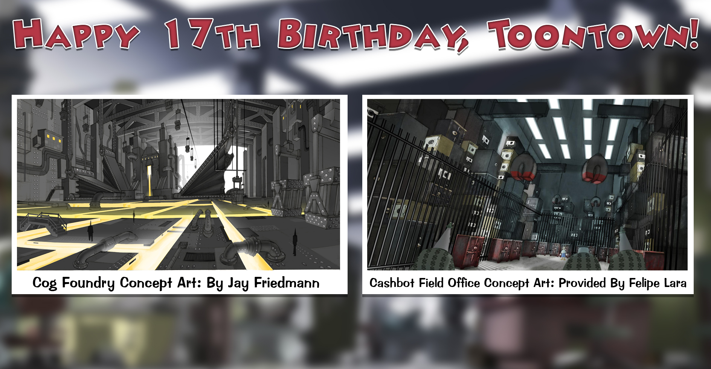

17 Toontastic Ways to Celebrate 17 Years of Toontown!
Posted by: The Toontown Relived Team on June 2, 2020 at 5:50 PM
Hey Toons! Today is the 17th Birthday of Toontown Online! What a wonderful and magical world we’ve lived in for so long! To think that on June 2nd, 2003, Toontown opened its gates (and portable holes) for the first time! Since then, millions of people around the world have experienced the wacky slapstick adventures of living the life as a toon in Toontown!

It's amazing to think that still to this day, members of the actual Toontown Team are still involved and talking with community members! You may have seen these on Twitter or Reddit already, but these two pieces of concept art were uncovered within the past few months!
You know, I was thinking about the history of Toontown and such. I think there are so many wonderfully wacky things we can experience from over the years! In fact, I’ve compiled a list of 17 Toontastic Ways to Celebrate 17 Years of Toontown! Wanna hear them? Good.
1. Play Trolley Tracks on Thursday, Silly Saturday, or Super Sunday!
2. Try to get a Blackout Fish Bingo win on Wednesday, Silly Saturday, or Super Sunday!
3. Train your Doodle to Speak!
4. Play a round of ‘The Hole Kit & Kaboodle’ at Acorn Acres Minigolf!
5. Try out a Resistance ToonTask with Lord Lowden Clear at Toon Hall!
6. Take down the evil Chief Executive Officer at Bossbot HQ!
7. Restore justice to Toontown and defeat the Chief Justice at Lawbot HQ!
8. Check your pie charts and profit margins, then take down the Senior Vice President at Sellbot HQ!
9. Get back the stolen loot in the Vault and take out the Chief Financial Officer at Cashbot HQ!
10. Choose from hundreds of ToonTask options and embark on a grand adventure!
11. Party like only a Toon can at the Party Grounds!
12. Drop an anvil and have your opponents eat your dust at the Speedway!
13. Meet up with your friends in Toontown Central!
14. Make a bunch of new friends and play together!
15. Enjoy a stunning fireworks spectacular at any playground!
16. Celebrate the joy of animation with humor and slapstick galore!
17. UNITE TO SAVE OUR TOWN!!!
These are just a few suggestions. Do you have a favorite thing or activity in Toontown? Let us know on Discord! We are so grateful for our players, without you we wouldn’t be here. Thank you for playing and supporting Toontown Relived!
Happy Birthday, Toontown - LET'S PARTY!!!!!
Toons of the World, Unite!